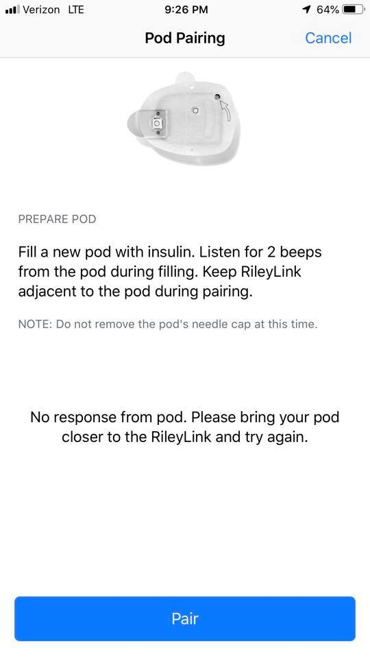
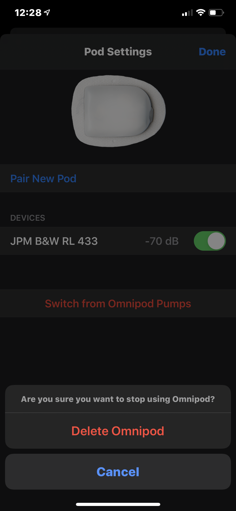

Pod Pairing Failures
Pod Pairing Failures¶
Have you seen an error message during the pairing process for a new pod? The most common messages are "No response from pod" or "Pod sent ack instead of response", as shown below.

There have been a large number of fixes and improvements to reduce various pairing problems and to automatically recover from them when they do occur. Make sure you stay on top of Loop updates to take advantage of these code improvements. It is strongly recommended to update to a modern stable version (i.e., the current Loop master release) when running any version of Loop prior to V2.2.4 with an Omnipod. In particular, you should never run Loop V2.2.3 with an Omnipod due to a severe UI bug that can result in a partially setup pod where the only possible recovery is an immediate Loop update to be able to complete the pod setup process.
Why do pod pairings fail?¶
Assuming the RileyLink is ok, the most common cause of a pod pairing failure is that Loop incorrectly partially pairs with the pod due to some problems during the fragile pairing process, perhaps aggravated by the placement of the RileyLink and the pod, wireless communications interference, and/or incorrect handling of some fault and retry conditions in versions of Loop prior to V2.2.4 that can leave the pod in an apparent non-responding state. This page will help you walk through some easy troubleshooting steps to recover that pod into good working order.
Move Logically
Let's walk through the pod pairing/replacement process from the very beginning to make sure that we have all the important steps clearly identified even before you attempt to press that Pair button.
Step 0: Check your Loop version¶
You can check which version of Loop you are running by pressing the gear in the bottom right hand corner of the Loop home screen and then looking at the line under the header. If you are running Loop V2.2.3, you should update immediately as this is the only way to recover from a number of pairing failure situations. If you are running a version of Loop prior to V2.2.4 (or its equivalent), it is recommended to update to the current Loop master release to prevent pairing difficulties.
Step 1: Verify the RileyLink¶
First, let's make sure everything is ok as far as the RileyLink goes:
- RileyLink is charged and nearby, and
- RileyLink has a green LED light lit (indicating a Bluetooth connection with your iPhone), and
- Try toggling the RileyLink off/on at its physical switch if the green light is not on.
Step 2: Deactivate old Pod¶
Make sure you've deactivated your old pod. If you had issues deactivating your pod, you likely may have some RileyLink issues going on...so make sure to see the steps above. If you have a problem with deactivating a pod, go ahead and skip to Step 5 to get a new pod going. You should also remove that old pod (that would not deactivate) from your vicinity. Put it in a microwave or throw it over the fence into the neighbor's backyard (kidding, obviously...but outside trashcan is a good idea).
Step 3: Start new pairing process¶
You've deactivated your old pod successfully...great! As the first part of pairing a new pod, Loop will prompt you to fill the new pod with insulin. Once a new pod is powered-up by the insertion of at least 85 units of insulin, the pod will emit reminder beeps every 5 or 10 minutes until the entire pod pairing process has completed. This pairing process must be completed within 60 minutes of beeps starting, or the pod will give up and never pair. These activation reminder beeps do not actually indicate that any pod communication is being attempted, just that the activation has not yet been completed and your 60 minute timer is counting down.
Hopefully, your pod pairing continues uneventfully at this point. You'll press the Pair button and the pod pairs, primes, and the cannula insertion is successful. BUT, if not...you'll want to keep reading Steps 4-5 to find out how to recover.
One beeping pod at a time, please
It is very important to not have two pods giving reminder beeps at the same time as this can cause even more confusion for you and for Loop. Continue to work with a single pod at a time, retrying the Pair attempts multiple times if needed as described in Step 4.
If you cannot get the pairing to complete with the single beeping pod (after trying the procedures described below a few times with multiple Pair attempts during each try), then you should completely abandon that pod before attempting to use another pod. "Completely abandon" means move that failed-to-pair-no-matter-what-you-tried pod far, far away from you or put it in a not-turned-on-but-door-is-closed microwave. You do not want that beeping-but-not-pairing pod to be able to plague your next pod's communications with Loop during the fresh pairing process.
Step 4: Check the RileyLink and Pod's Placement¶
Pod pairing failed?
Ok, so you've pressed that Pair button and received an error message like shown at the top of screen? It's time to start the stepwise process of seeing if we can get it to recover successfully.
The placement of the pod and the RileyLink relative to each other is critical variable because the pod operates in a low power radio mode during pairing which can lead to a number of potential faulty and half-paired pod situations, particularly with earlier versions of Loop.
How close should they be? Most people assume "the closer the better", but it has been measured that if the RileyLink and pod are too close together, the RileyLink may not be able to pick up the pairing response. The current recommendation is for the RileyLink to be placed a few inches to the side of the pod being paired.

If Pair fails, move a bit and RETRY
- If the Pair operation is not succeeding, try repositioning the relative placement of the RileyLink and the pod multiple times. A little closer together if you had them far apart? A bit farther apart if they were really close? RileyLink on its side? Try standing it up with the antenna pointed to the ceiling.
- If the pairing is still unsuccessful with multiple repositioning attempts, move yourself, the RileyLink, and the pod to another area/room (preferably away from other radio frequency signals that might be interfering), and try Pair again. Again don't be shy to try repositioning the RileyLink and pod's relative position, if needed, in this new area/room too.
- If you have another available RileyLink, you can also try pairing using that RileyLink instead.
Step 5: Pod Pairing Recovery¶
When you have a pod that continues to appear non-responsive or sending "ack" responses after several retried Pair attempts, it may be possible to recover by forcing Loop to start the pairing process from the beginning.
To start we will have to press the Cancel button in the upper right corner of the pairing screen. Depending on which state the pod is stuck at in the pairing process...you'll see one of two screens after you select the Cancel button. Follow the directions (Step 5A vs Step 5B) for whichever screen corresponds to what you see after pressing Cancel.
-
Step 5A "Switch from Omnipod Pumps": You press Cancel and Loop will send you back to the Pod Settings screen to do the "Switch from Omnipod Pumps" method
-
Step 5B "Deactivate": You press Cancel and Loop will display a screen giving the option to "Deactivate"
Step 5A "Switch from Omnipod Pumps"¶
If you press the Cancel button and see a screen like below, you're going to select Switch from Omnipod Pumps in red. While this appears to confirm that you want to stop using the Omnipod, we will be adding pods back soon. Don't worry.

Don't fret. None of your Loop settings including the basal schedule and delivery limits, will be lost deleting the Omnipod pump. Select Delete Omnipod to proceed which will take you back to the Loop home screen. From here, select the gear icon at the bottom right to go the Loop Settings page. Then select Add Pump in blue and then select Omnipod from the Add Pump list displayed.

Verify that the green LED on the RileyLink goes on and off as you touch the switch for RileyLink you are using indicating a successful Bluetooth connection between the RileyLink and your iPhone. Leave the RileyLink enabled with its green LED and slider turned on, and then touch the Continue button on the bottom. The Pod Settings screen should have the previous Basal Rates and Delivery Limits in effect from your previous run which can be verified at this time. Once ready, select Continue on the bottom of the screen.

Finally, you will be back to the Pod Pairing screen.

Instead of filling a new pod with insulin, attempt to pair again using the original pod which was previously filled but unable to complete the pairing process successfully. That pod should still be occasionally giving reminder beeps. Place the RileyLink a few inches to the side of the pod and press the Pair button at the bottom of the screen and hopefully Loop will be able to successfully pair this time after starting from a fresh slate. If this pairing attempt is still unsuccessful, remember to still exhaust repositioning and Step 4 options before giving up on that pod. If it really won't pair after all that...then mark that loser pod with a Sharpie-drawn sad face and follow the directions in Step 3's colored box so that you don't end up with multiple beeping pods around accidentally.
Step 5B "Deactivate pod"¶
If you press the Cancel button and see an option for "Deactivate pod", we're going to do a little differently than Step 5A.
You might lose your pod by attempting this procedure
This is a point of no return for certain pod pairing situations and it is possible that the pod will be lost by attempting this procedure depending on the pod state. Some will recover fine, others may not. Since you can't know in advance if you might lose the pod, it is important to have already exhausted other possibilities described above in Steps 1-4 to try pairing. Specifically, (1) attempting to pair several times using varied relative positions of the RileyLink and pod (2) trying the pairing again but in a different room/location that might have less wireless interference, and (3) verifying your RileyLink is connected and functioning correctly.
For this next part, we want to make sure that the pod doesn't accidentally receive the deactivation command we are about to use. We want Loop to do the command...we just really don't want the pod to hear it. There's two ways we can keep the pod from hearing it, either (1) prevent the RileyLink from hearing Loop's command (and thus the command cannot reach the pod) or (2) prevent the pod from hearing the command from RileyLink. To accomplish our keep-the-pod-ignorant goal, you can try either option like so:
- Prevent RileyLink from hearing: Turn your RileyLink off temporarily at its physical switch. Some people worry about accidentally breaking their RileyLink switch, and if that's you...you can instead put the RileyLink far away from your iPhone or put the RileyLink in the microwave. That will keep the RileyLink from hearing the Loop's deactivate pod command. If RileyLink can't hear it, then your pod won't receive it.
- Prevent pod from hearing: Move the beeping pod to a place that the pod is incapable of hearing the command. There's several options depending on what works for you:
- Put the beeping pod far away..."shouldn't be able to hear those beeps anymore" kind of distance.
- Put the pod in a not-turned-on-but-door-is-closed microwave.
- Put the pod in a faraday bag, if you own one.
Ok. Have the pod nice and ignorant? Good. Now press the "Deactivate Pod" button. It will take a few attempts, and you will see some failure messages about how the deactivation failed (of course it did...we hid the pod!) Eventually, you'll be given an "Continue" button that you'll want to use.

Press the "Continue" button. The instructions start with "fill a new pod with insulin"...BUT DO NOT! Instead, bring that beeping pod back to the hearing range. Turn that RileyLink back on if you turned it off. Once you get the RileyLink on and the pod back in range, you'll just press the Pair button and hopefully you'll find success with the process. If this pairing attempt is still unsuccessful, remember to still exhaust repositioning and Step 4 options before giving up on that pod. If it really won't pair after all that...then mark that loser pod with a Sharpie-drawn sad face and follow the directions in Step 3's colored box so that you don't end up with multiple beeping pods around accidentally.

Step 6: Help improve pod pairing process¶
To help fix pairing bugs, some improvements have also been made in our ability to save the communications between the pods and Loop app during the pairing process. So, please help us leverage these new improvements and better squash bugs.
If you run into any pairing problems when running a version of Loop prior to V2.2.4, which required Step 5A or Step 5B to be able to pair, or you had a pod that had to be abandoned, it would be helpful to generate an "Issue Report" after you finally get a pod paired (whether is was the original pod or if a different pod) and then post the resulting "Loop Report" on Zulipchat here with a short explanation of what happened.
What about other pod start-up failures?¶
If you have a pod that has already started the priming operation and then has problems either finishing the priming operation or the cannula insertion, then forcing a pod pairing recovery is not possible. If a pod fails during priming or cannula insertion, the pod is no good and it should be deactivated and disposed of properly.
What about that insulin?¶
If you have the misfortune of losing a pod during pairing, you can opt to not waste the insulin in that pod. Simply use the same syringe and same fill port on the pod to suck the insulin OUT of the loser pod.
If you do that, good practice is to make sure that you get that loser pod far away from the process as you go forward. Mark a big "X" on the failed pod and put it in a microwave, or very far away from you, so that it can't interfere with subsequent pod pairing attempts.